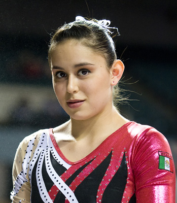

Elsa Garcia (MEX)
2006 Central American Games AA Champion
2007 Cottbus UB and FX Gold Medalist

Elsa was born on February 8, 1990 in Monterrey, Mexico. She's coached by Antonio Barraza and Teresa Lopez at Regio Club Gimnastico. Check out her website for more information.
Competition
Results
2000
Gymnastics Challenge: 1st AA
2002
Jr. Pacific Alliance Championships: 4th FX
MEX Championships: 2nd AA
Spring Cup: 2nd AA
2003
Friendship Classic: 6th AA
2004
Jr. Pacific Alliance Championships: 9th AA, 1st V, 2nd FX
Jr. Pan American Championships: 2nd AA
2005
Leverkusen Cup: 3rd Team, 3rd AA
2006
American Cup: 5th AA
Central American Games: 1st AA, 1st UB, 1st FX, 3rd V
World Championships: 33rd AA (prelims)
2007
American Cup: 3rd AA
Cottbus International: 1st UB, 1st FX, 3rd V
French International: 2nd FX, 3rd V, 6th UB
Pan American Games: 7th AA
World Championships: 20th Team
2009
World Championships: 12th AA
2010
American Cup: 8th AA
2011
Pan American Games: 3rd Team, 5th AA, 2nd V, 3rd UB, 5th FX
World Championships: 17t Team, 63rd AA (prelims)
This page was created on June 25, 2010 and was last updated on July 01, 2012.
© Gymn Forum